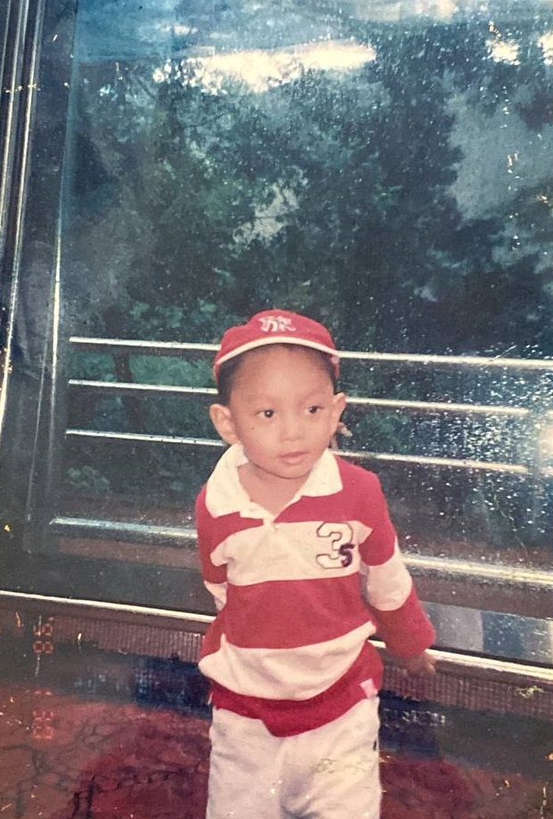
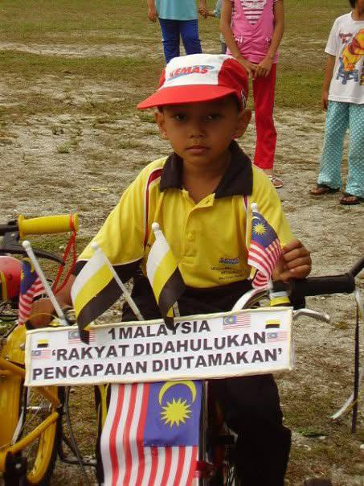
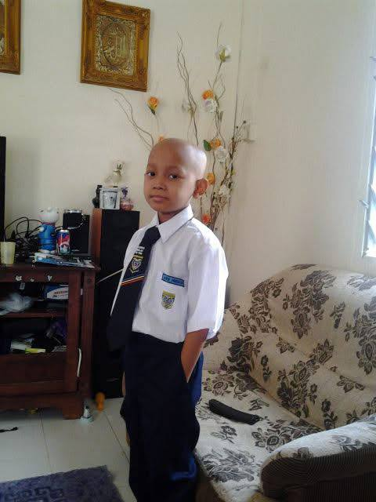
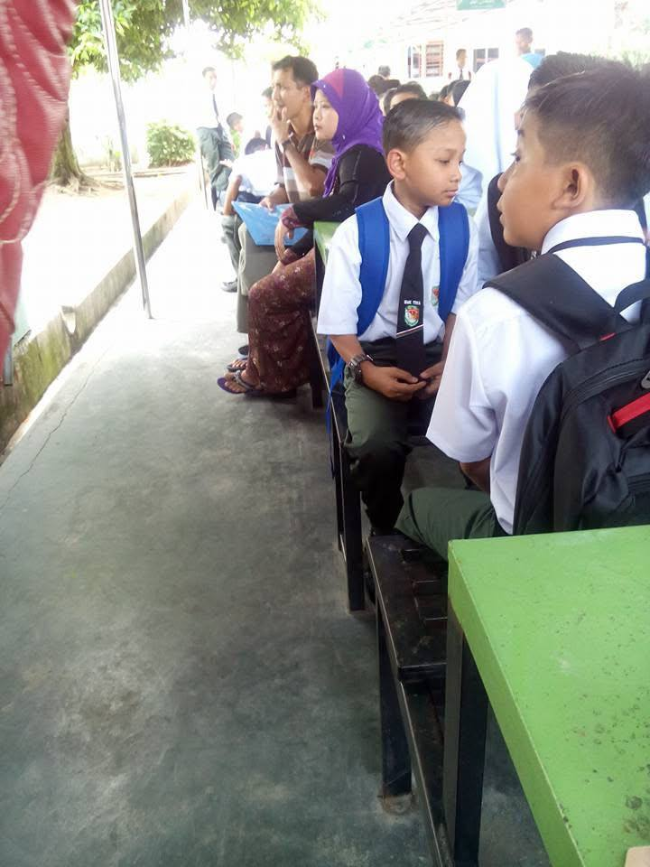
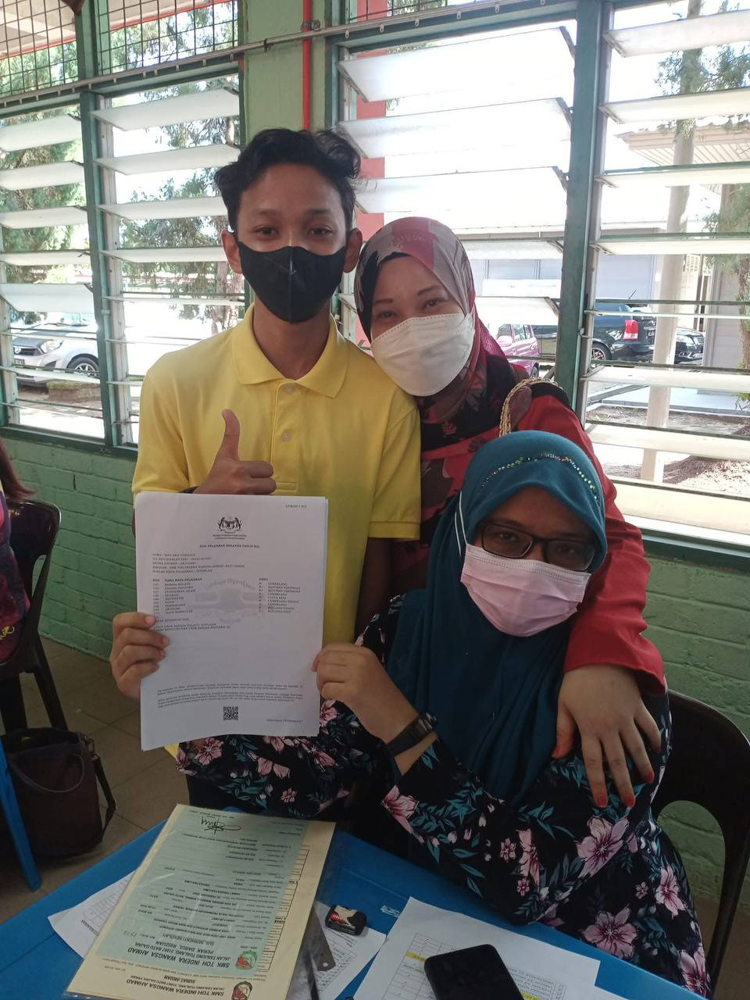
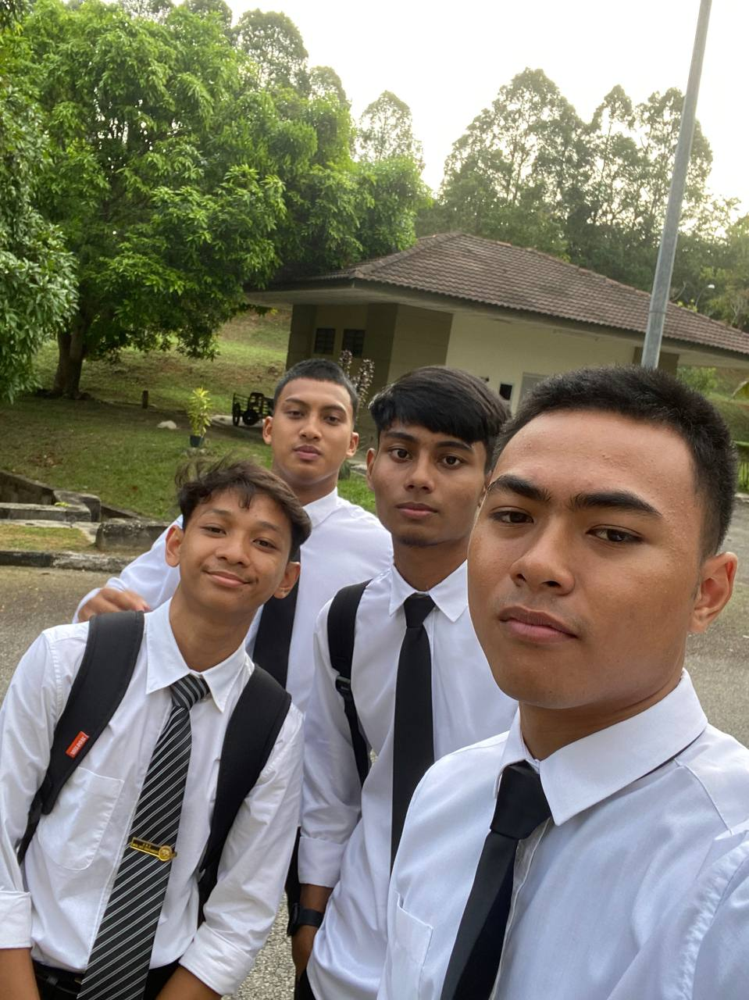
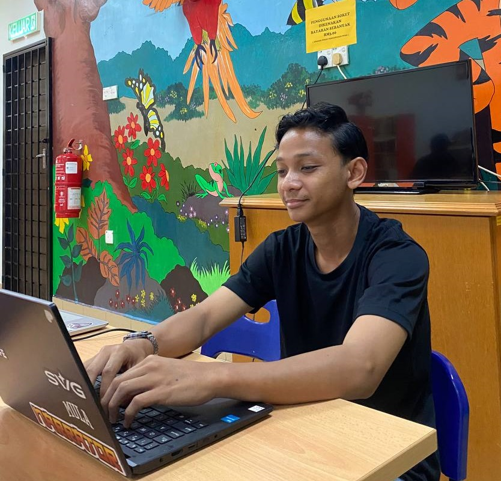

About Me
My name is Wan Arif Ferdaus, but usually, my friends just call me Wan. I'm 20 years old, and I was born and raised in Batu Gajah, Perak.
I'm the oldest son in my family and I have 2 younger siblings.
2008
Started Kindergarten

2009
Ended Kindergarten

2010
Started Primary School

2017
Started High School

2021
Graduated High School

2022
Started University

2024
Currently Studying
